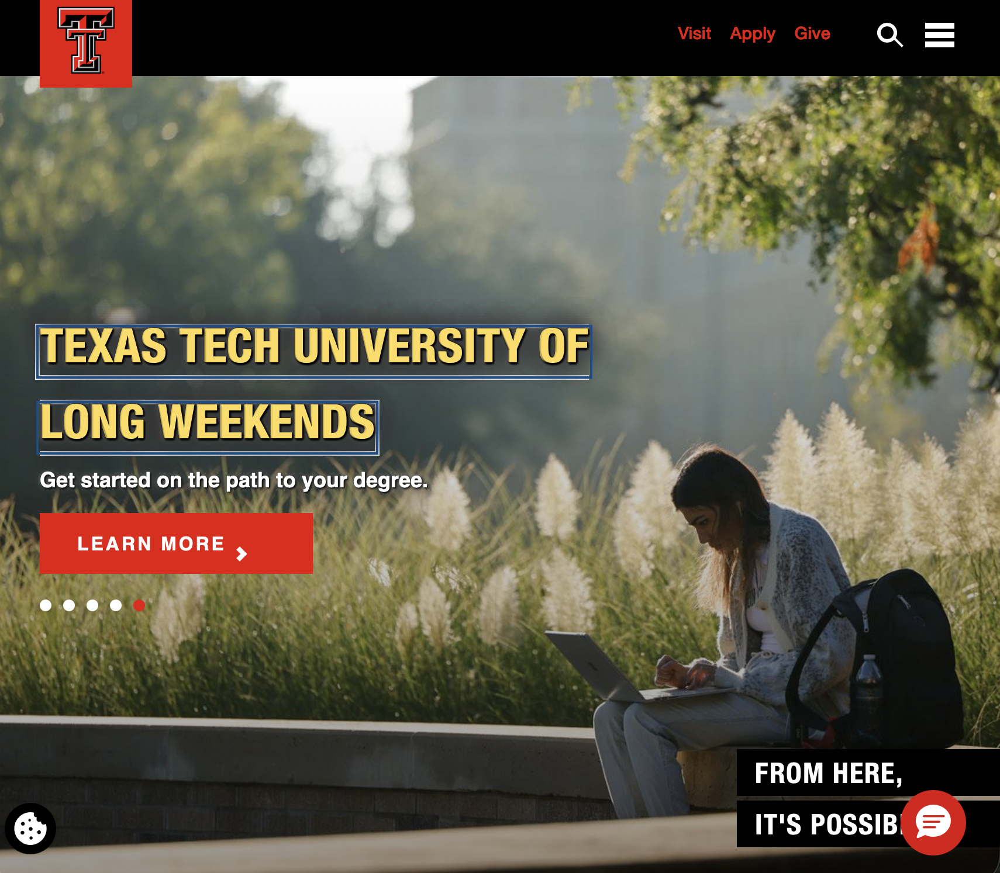

Texas Tech University of Long Weekends
I used Safari’s Web Inspector to change the Texas Tech homepage headline from “Explore Online Programs” to “Texas Tech University of Long Weekends.”

What I Changed
I changed the headline from white to yellow and reduced the font size so the longer headline would fit. The screenshot shows the temporary edits I made in my browser.